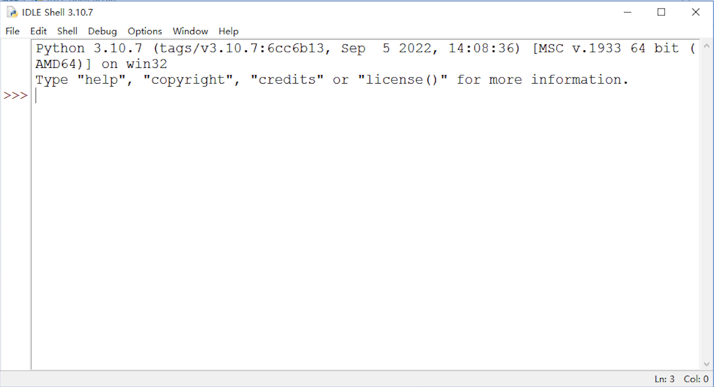
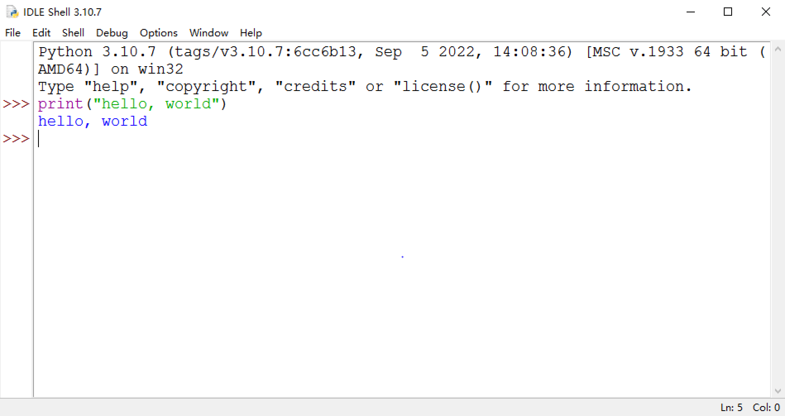
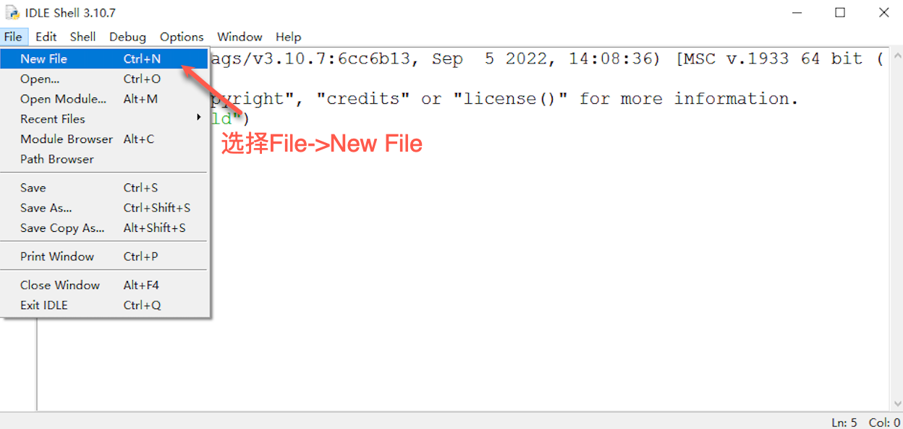

第一个Python程序： hello, world
上一章节，我们了解了Python的特性和生态，也学会了如何在自己的计算机上安装Python的官方解释器。接下来我们正式开启Python编程的学习。
但：
所有的代码编写必须都要用英文输入法！！！
所有的代码编写必须都要用英文输入法！！！
所有的代码编写必须都要用英文输入法！！！
重要的事情说三遍；除了字符串的内容，所有的编程语言必须用英文输入法编写代码，包括包围在字符串左右两边的引号（单引号和双引号）。
IDLE
我们要使用的集成开发环境是官方提供的IDLE，在正式学习之后，要知道该怎么打开它。
点击 【开始】 菜单，找到安装的 【Python 3.x】 文件夹，点击 【IDLE】 打开它：

如下图，我们可以看到这个简单甚至简陋的Python自带的IDLE的界面；它会在本教程伴随我们一直到最后。

从IDLE的界面，我们可以看到Python的版本信息以及当前的运行环境信息，同时也有一些提示命令。
在上述信息的下方，我们看到>>>这样的符号，这个是Python语句输入的提示符，它的后面会有一光标在不停地闪烁，表示我们在该位置可以输入命令或者代码。
hello, world
几乎在学习所有编程语言的最初，都会让我们先学会写一个简单的程序输出hello, world这样一句话，因为这段代码是伟大的丹尼斯·里奇（C语言之父，和肯·汤普森一起开发了Unix操作系统）和布莱恩·柯尼汉（awk语言的发明者）在他们的不朽著作The C Programming Language 中写的第一段代码。Python也并不例外，但是在Python中，不需要像有些语言那样先构造一个复杂的语法结构，我们只需要下面一行代码就可以实现：
print("hello, world")
IDLE给我们提供了两种编程环境，帮助我们去学习Python语言，它们分别是交互式环境和文本编辑环境，我们下面结合这两种编程环境的介绍，来完成我们在Python中的第一个程序。
交互式环境
交互式环境的意思就是，我们输入了一行代码，敲击回车键之后，代码会马上被执行, 如果执行的代码有结果生成，那么这个结果会直接显示在窗口里。
我们打开IDLE之后所看到的界面就是一个交互式环境，我们可以在输入提示符之后，输入代码再回车(#后面的内容不需要输入)：
>>>print("hello, world") #输入完成后敲回车
#下面一行为输出的结果
hello, world

这里需要注意的是，我们只能在最后一个输入提示符>>>之后输入代码，即使在这之前有很多个>>>并没有我们输入的内容，就算是把光标移过去也是不可以的。
交互式环境的编程有很大的局限性，因为他每次只能写一行代码，或者是一个代码块，当我们要写的程序行数很多的时候就会很麻烦，一旦写的代码有错误，不能回去修改，只能重写。但是交互式编程并不是不可取的，它能够快速把代码执行的结果反馈出来，在这一点上是很便利的。
文本编辑环境
文本编程是指在文本编程器中编写代码并保存成文件之后，通过编程器编译成可执行的程序文件，或者通过解释器直接执行该程序文件的一种编程方式，文本编程也可以被叫作脚本式编程或者文件式编程，这种编程方式要求代码必须编写成一个纯文本文件，不能含有除了代码之外的任何信息。所以它对编辑文本的工具软件是有要求的，比如Windows系统中自带的记事本就可以进行代码的编写，然而写字板或者Office套件中的Word就不可以，因为这两种软件保存的文件中包含了其它除代码之外的内容。
IDLE中同样提供了这样的文本编辑环境，可以根据下列步骤进行操作：
-
在IDLE的菜单栏中，选择 【File】, 然后点击 【New File】 打开一个文件编辑窗口: 
-
在打开的文件编辑窗口之后，输入代码
print("hello, world")：
-
完成代码编写之后，保存文件，在菜单栏中 【File】, 然后点击 【Save】，然后输入保存的文件名字，一定要注意 【保存类型】 一定是 Python files(.py;.pyw,*.pyi) :

-
保存好文件之后，就可以运行程序了，在菜单栏中选择 【Run】, 然后点击 【Run Module】 就可以了，该操作的快捷键为 F5:

-
运行完成之后，结果会输出在IDLE中：

文本式编程是一种比较灵活的编程方式，一旦我们编写完代码运行之后发现了错误，就可以重新打开文件去修改：
-
在菜单栏中，选择 【File】，点击 【Open】:

-
选择要打开的文件:

-
修改代码，之后再运行即可：

对于一个的程序员来讲，找到一个强大的集成开发环境是必不可少的先决条件。目前有几款比较流行的集成开发工具都支持Python编程，比如微软的Visual Studio Code (简称VS Code)，或者JetBrains的PyCharm， 这些都是很强大且专业的工具。
有兴趣的同学可以点击下列链接了解上述提到的工具：
总结
我们已经把第一个Python程序运行起来了，同时出了解了两种不同的编程环境。同学们可以自由发挥，用print函数输出一些其它内容，注意要用引号引上。
可以尝试把下列代码通过文本式编程编写并运行，看看我们能看到什么？
注：两个"""之间的内容可以不用写， 且不要直接复制粘贴到交互式的环境中！
"""
第一个海龟画图程序：
1. 注意语句的缩进
2. 可以把range后面括号里的值改成其它数值
3. 可以把left后面括号里的值改成其它数值
4. 可以把left替换成right
"""
import turtle as t
colors = ['red', 'green', 'orange', 'blue']
for i in range(100):
t.color(colors[i%4])
t.forward(i)
t.left(90)